Imprese in Sicilia
Analisi Opendata Marche — InfoCamere
Paolo Volterra ![]()
1 Guida alla lettura dei grafici
Figura 1 Lo stock delle imprese mostra un andamento tendenzialmente decrescente, con oscillazioni riconducibili alla stagionalità amministrativa delle iscrizioni e cancellazioni.
Figura 3 I flussi di iscrizioni e cancellazioni evidenziano una marcata stagionalità, con picchi generalmente concentrati nei mesi primaverili.
Figura 4 Il saldo netto mensile tra iscrizioni e cancellazioni risulta prevalentemente negativo.
Figura 5 La composizione per natura giuridica è dominata dalle ditte individuali, mentre le società di capitale crescono lentamente.
Figura 6 Si osserva un calo delle ditte individuali e una sostanziale stabilità delle società di capitale.
Figura 7 Le quote di imprese artigiane e femminili risultano entrambe in lieve riduzione nel lungo periodo.
Figura 8 La distribuzione territoriale evidenzia la centralità di Catania e Palermo.
Figura 9 Le iscrizioni confermano il dinamismo imprenditoriale dei principali capoluoghi.
Figura 10 Le cancellazioni risultano proporzionali alla base imprenditoriale provinciale.
Figura 11 Il saldo per provincia risulta negativo nella maggior parte dei territori.
Figura 12 Le crisi e insolvenze mostrano andamento irregolare, con possibili effetti del Codice della Crisi.
Figura 13 La quota della Sicilia sul totale nazionale rimane stabile intorno al 5%.
Figura 14 Nel Mezzogiorno si osserva un calo diffuso con intensità diversa tra regioni.
Figura 15 La Sicilia resta la prima regione del Mezzogiorno per stock di imprese.
Figura 16 L’indice indicizzato evidenzia una contrazione più marcata rispetto alla media nazionale.
2 Quadro generale
| Indicatore | Valore | Nota |
|---|---|---|
| Imprese attive (stock) | 372.874 | 7.5% delle italiane |
| di cui artigiane | 69.908 | 18.7% dello stock regionale |
| di cui femminili | 92.842 | 24.9% dello stock regionale |
| Var. tendenziale (a/a %) | -0.29% | — |
| Iscrizioni (ultimo mese) | 1.888 | — |
| Cancellazioni (ultimo mese) | 2.419 | — |
Tabella 1: Indicatori principali — Sicilia (ultimo dato disponibile)
3 Stock imprese attive
3.1 Trend mensile
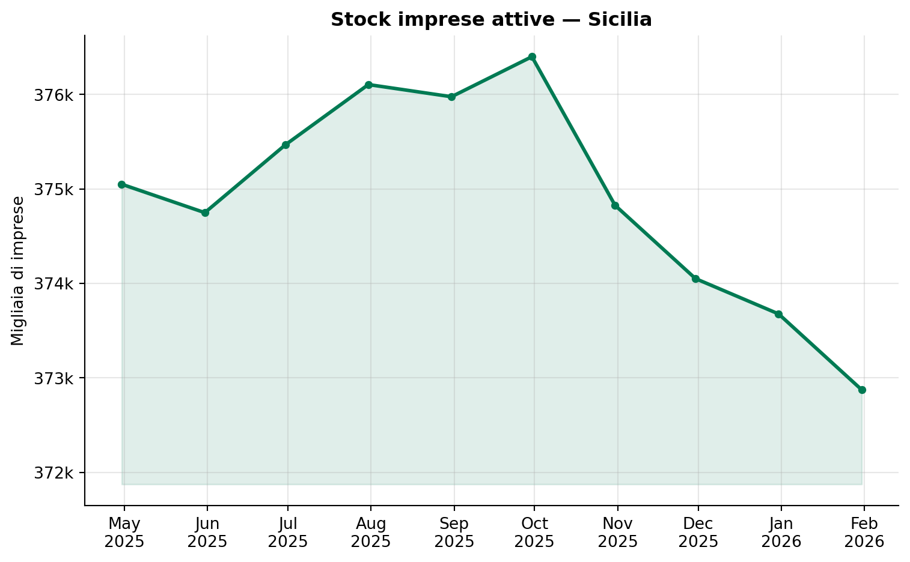
Figura 1: Stock imprese attive — Sicilia (serie mensile)
Lo stock di imprese attive in Sicilia mostra un andamento tendenzialmente decrescente nel periodo osservato, con lievi fluttuazioni stagionali legate alle dinamiche di iscrizione e cancellazione.
3.2 Variazione tendenziale (a/a)
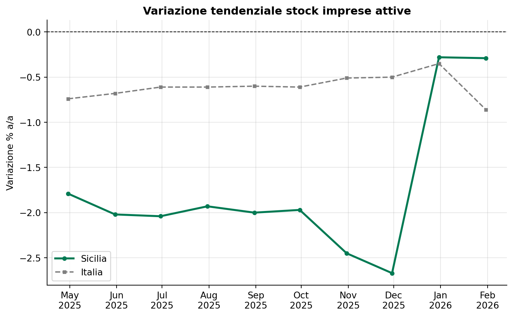
Figura 2: Variazione tendenziale % — Sicilia vs Italia
4 Flussi: iscrizioni e cancellazioni
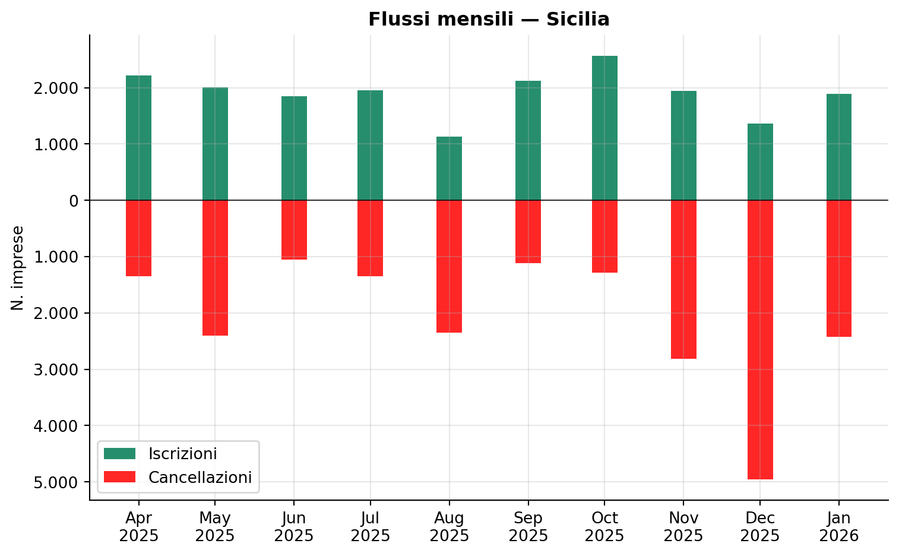
Figura 3: Iscrizioni e cancellazioni mensili — Sicilia
Il grafico evidenzia la stagionalità dei flussi: le iscrizioni tendono a concentrarsi nei mesi primaverili, mentre le cancellazioni aumentano verso fine anno.
4.1 Saldo netto
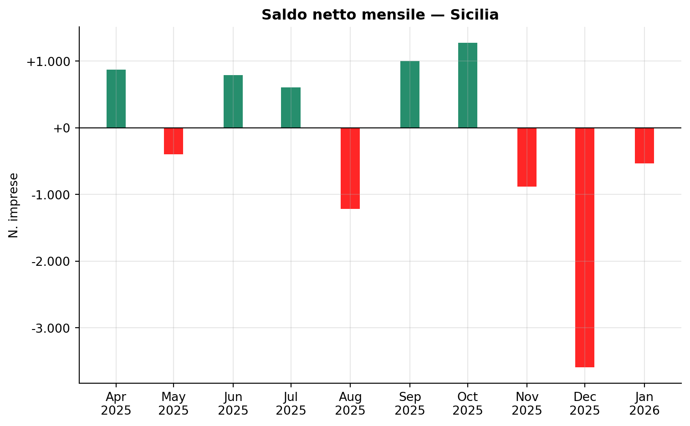
Figura 4: Saldo netto (iscrizioni − cancellazioni) — Sicilia
Il saldo netto risulta prevalentemente negativo, segnalando una contrazione del tessuto imprenditoriale siciliano nel periodo considerato.
| Periodo | Iscrizioni | Cancellazioni | Saldo |
|---|---|---|---|
| 2025-04 | 2.219 | 1.345 | +874 |
| 2025-05 | 2.009 | 2.407 | -398 |
| 2025-06 | 1.845 | 1.054 | +791 |
| 2025-07 | 1.956 | 1.348 | +608 |
| 2025-08 | 1.130 | 2.346 | -1.216 |
| 2025-09 | 2.124 | 1.120 | +1.004 |
| 2025-10 | 2.562 | 1.289 | +1.273 |
| 2025-11 | 1.939 | 2.818 | -879 |
| 2025-12 | 1.362 | 4.951 | -3.589 |
| 2026-01 | 1.888 | 2.419 | -531 |
Tabella 2
5 Struttura per natura giuridica
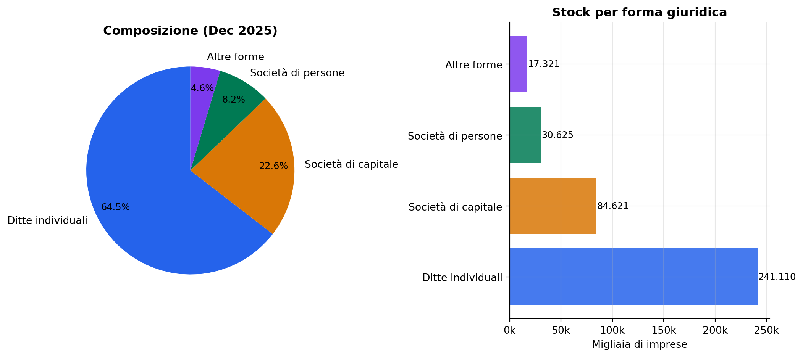
Figura 5: Composizione per natura giuridica — Sicilia (dic 2025)
Le ditte individuali costituiscono la forma giuridica dominante, seguite dalle società di persone. Le società di capitale rappresentano una quota minoritaria ma in crescita progressiva.
5.1 Trend per forma giuridica
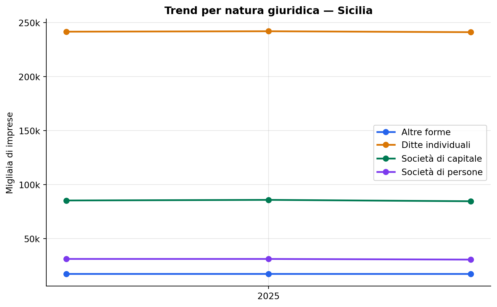
Figura 6: Trend trimestrale per natura giuridica — Sicilia
Le ditte individuali mostrano il calo più marcato nel lungo periodo, mentre le società di capitale mantengono una relativa stabilità, a riprova di una progressiva formalizzazione del tessuto imprenditoriale.
6 Imprese artigiane e femminili
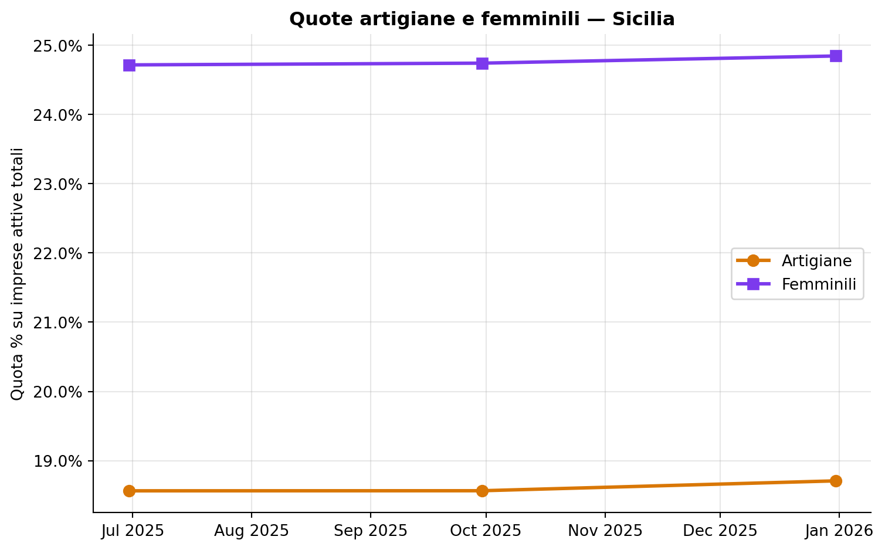
Figura 7: Imprese artigiane e femminili — Sicilia (quota % su stock totale)
La quota di imprese artigiane è strutturalmente più alta di quella femminile; entrambe mostrano una lieve tendenza al ribasso nel lungo periodo, segnalando una pressione sul modello tradizionale di impresa siciliana.
7 Analisi provinciale
7.1 Stock imprese attive per provincia
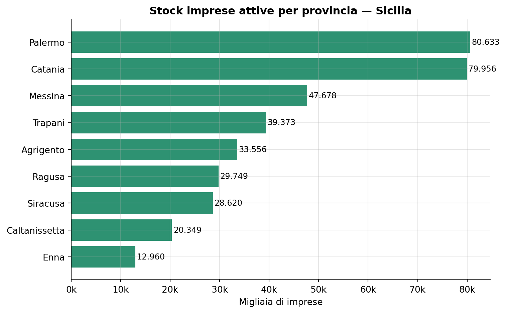
Figura 8: Stock imprese attive per provincia — Sicilia (ultimo dato)
Catania e Palermo concentrano la quota maggiore dello stock provinciale, riflettendo il peso demografico ed economico dei rispettivi capoluoghi. Le province minori (Enna, Caltanissetta) mostrano valori significativamente più contenuti.
7.2 Iscrizioni per provincia
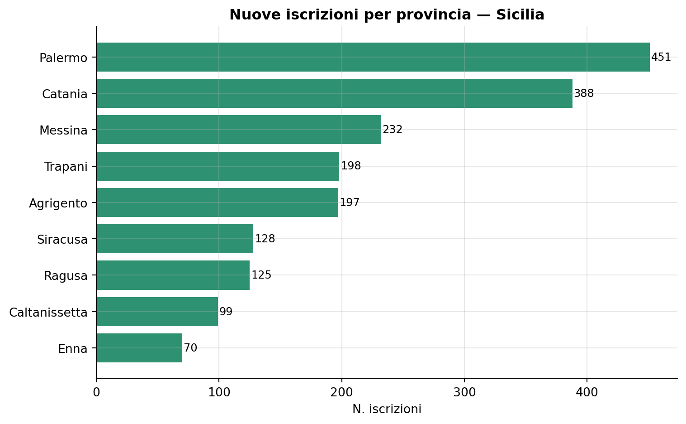
Figura 9: Nuove iscrizioni per provincia — Sicilia (ultimo mese)
Catania e Palermo guidano anche per numero di nuove iscrizioni, a conferma della loro centralità nel dinamismo imprenditoriale regionale.
7.3 Cancellazioni per provincia
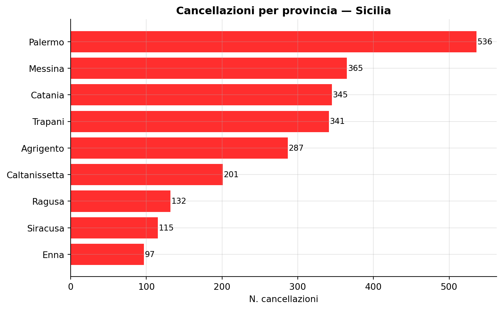
Figura 10: Cancellazioni per provincia — Sicilia (ultimo mese)
Il volume di cancellazioni è proporzionale alla dimensione provinciale: Catania e Palermo registrano i valori assoluti più elevati, ma questo riflette la loro maggiore base imprenditoriale.
7.4 Saldo netto per provincia
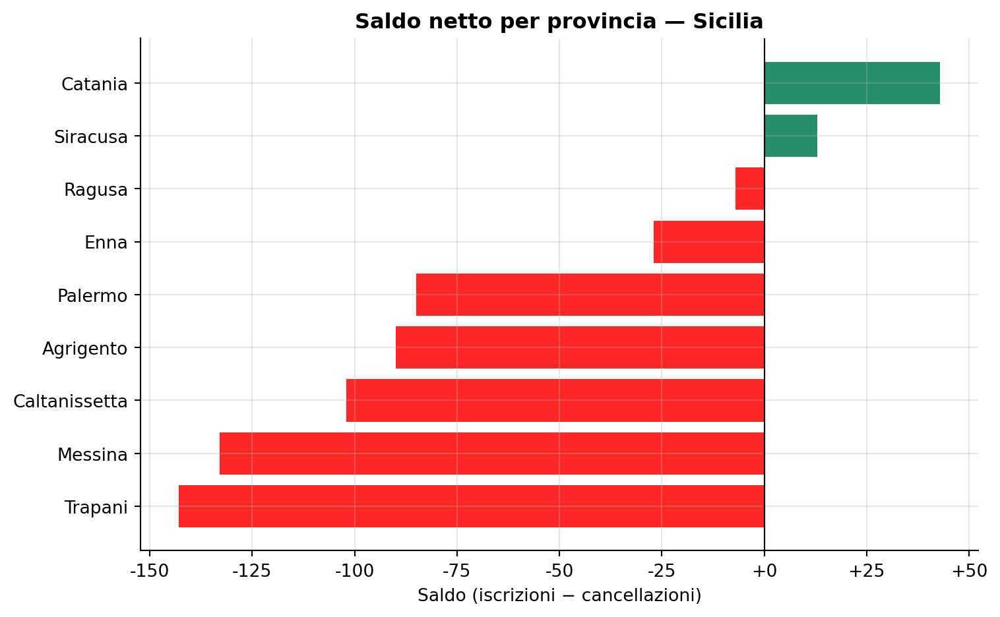
Figura 11: Saldo netto (iscrizioni − cancellazioni) per provincia
Il saldo è negativo per la maggior parte delle province siciliane. Le aree più piccole (Enna, Caltanissetta) mostrano valori assoluti meno rilevanti, mentre Palermo e Catania presentano i disavanzi più ampi.
8 Strumenti di crisi e insolvenza
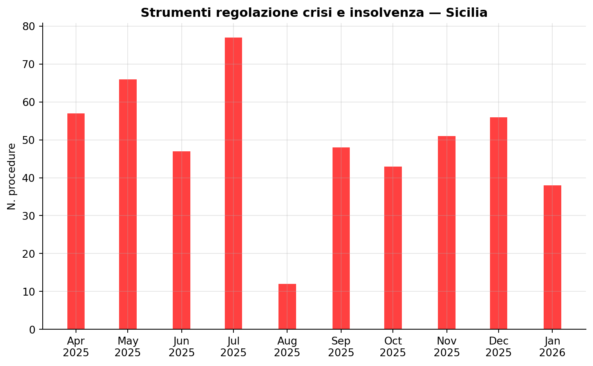
Figura 12: Strumenti di regolazione della crisi — Sicilia
Il ricorso agli strumenti di regolazione della crisi evidenzia un andamento irregolare, con picchi che possono riflettere effetti legislativi (entrata in vigore del Codice della Crisi) o congiunturali specifici.
9 Sintesi
| Indicatore | Valore | Nota |
|---|---|---|
| Stock imprese attive | 372.874 | -0.29% a/a |
| Quota su Italia | 7.5% | |
| Imprese artigiane | 69.908 | 18.7% dello stock |
| Imprese femminili | 92.842 | 24.9% dello stock |
| Iscrizioni (ultimo mese) | 1.888 | |
| Cancellazioni (ultimo mese) | 2.419 | |
| Provincia più grande (stock) | Palermo |
Tabella 3
10 Confronto Mezzogiorno e Italia
10.1 Quota di Sicilia su Mezzogiorno e Italia
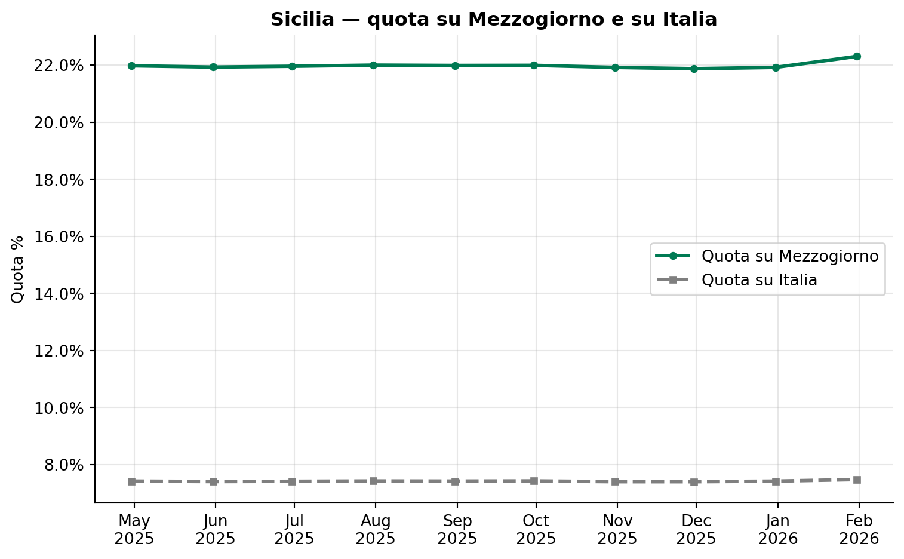
Figura 13: Quota % Sicilia su Mezzogiorno e su Italia — stock imprese attive
La quota della Sicilia sul Mezzogiorno si mantiene stabile nel tempo, mentre la quota sull’Italia oscilla intorno al 5%, confermando la rilevanza della regione nel contesto meridionale.
10.2 Variazione tendenziale: regioni del Mezzogiorno
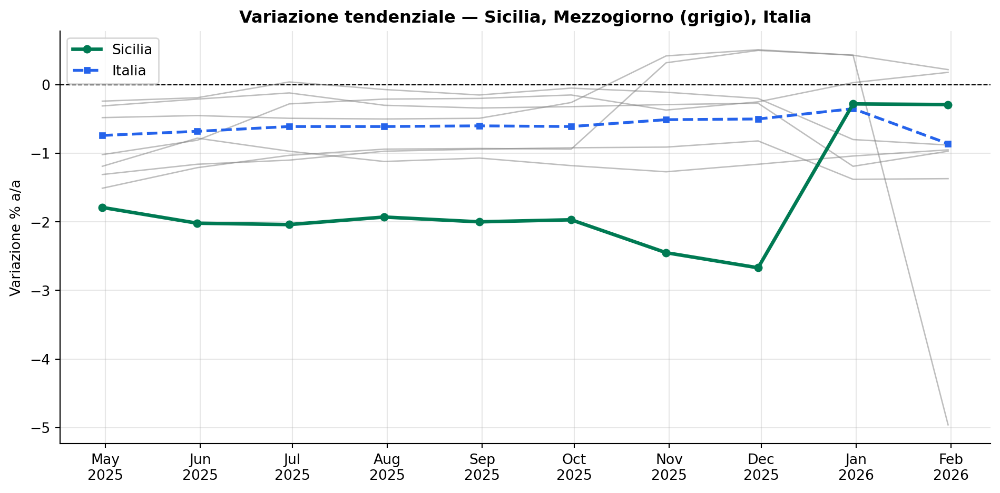
Figura 14: Variazione tendenziale % a/a — regioni del Mezzogiorno vs Italia
La Sicilia mostra variazioni tendenziali più negative rispetto alla media nazionale. Il confronto con le altre regioni del Mezzogiorno (in grigio) evidenzia come la contrazione sia un fenomeno diffuso, ma con intensità variabile.
10.3 Ranking Mezzogiorno per stock (ultimo dato)
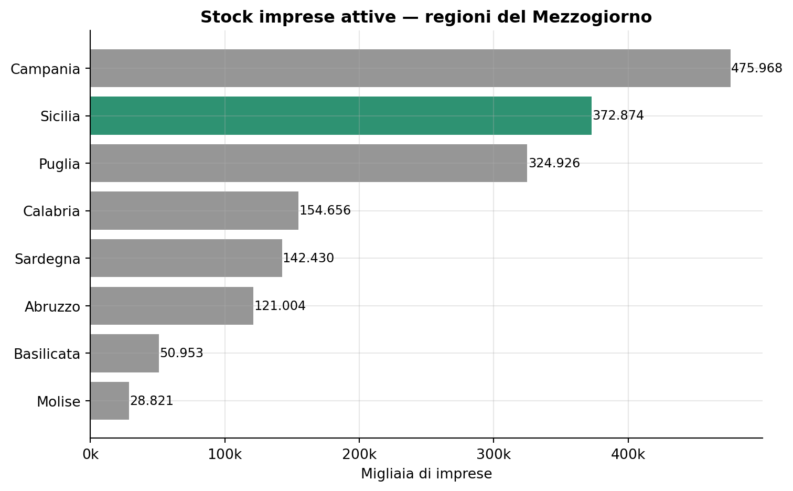
Figura 15: Stock imprese attive — regioni del Mezzogiorno (ultimo dato disponibile)
La Sicilia si conferma la regione del Mezzogiorno con il maggior numero di imprese attive. Il distacco rispetto alle regioni minori (Molise, Basilicata) è molto marcato.
10.4 Trend stock indicizzato (base = primo periodo)
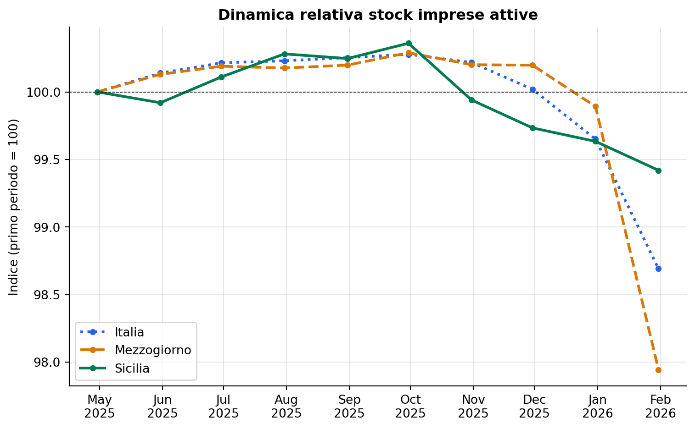
Figura 16: Stock imprese attive indicizzato (primo periodo = 100) — confronto
L’indice mostra che la Sicilia ha registrato una contrazione del tessuto imprenditoriale più marcata rispetto all’aggregato Mezzogiorno e all’Italia nel periodo analizzato, segnalando una minore capacità di recupero post-crisi.
11 Esporta dati
Fonte: Opendata Marche — InfoCamere. Dati aggiornati al 2 marzo 2026. Elaborazione: UO Studi e governo iniziative.